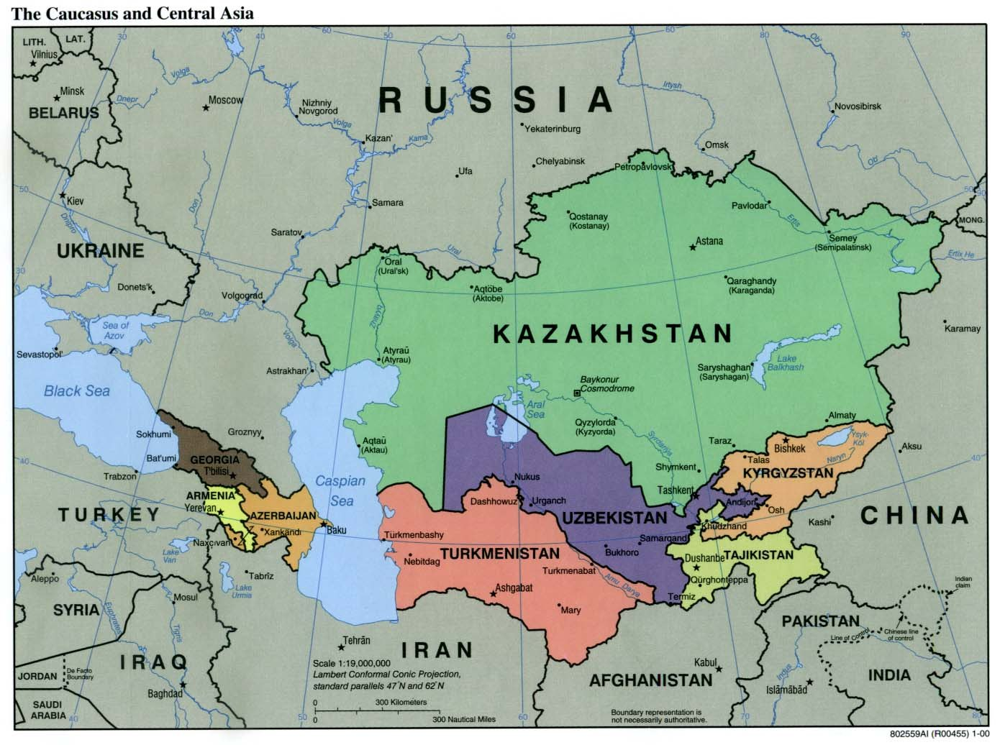

Центральноазиатский союз (1994): экономическая интеграция Узбекистана, Казахстана и Кыргызстана
В первые годы независимости три центральноазиатских государства — Узбекистан, Казахстан и Кыргызстан — создали в 1994 году единое экономическое пространство. Это была первая крупная попытка интеграции, которую вёл сам регион, без Москвы.

Когда в 1991 году распался СССР, а вместе с ним единая рублёвая зона, новые независимые государства искали способы сохранить экономические связи. Для стран Центральной Азии это было особенно насущно — их экономики в советское время были тесно переплетены. На этой почве в 1994 году сложился проект региональной интеграции (Источник: Kushkumbayev — Gone but Not Forgotten: The Central Asian Union, 1990–2005; Wikipedia — Central Asian Union).
Создание (1994)
10 января 1994 года в Ташкенте Казахстан и Узбекистан подписали Договор о создании единого экономического пространства, поддержанный президентами Нурсултаном Назарбаевым (Казахстан) и Исламом Каримовым (Узбекистан). Кыргызстан при президенте Аскаре Акаеве присоединился к договору 30 апреля 1994 года. На саммите в Алма-Ате 8 июля 1994 года три главы государств договорились учредить институты союза — эту дату обычно называют формальным созданием Центральноазиатского союза (Источник: Kushkumbayev — Gone but Not Forgotten; Wikipedia — Central Asian Union).
Созданные институты
Союз учредил несколько органов: Межгосударственный совет (высший орган из глав государств), советы премьер-министров и министров иностранных дел и постоянный Исполнительный комитет со штаб-квартирой в Алма-Ате. Казахстан, Узбекистан и Кыргызстан также создали Центральноазиатский банк сотрудничества и развития (Источник: Kushkumbayev; Wikipedia — Central Asian Union).

Цель
Проект строился вокруг «четырёх свобод»: свободного движения товаров, услуг, капитала и рабочей силы, а также координации кредитной, расчётной, таможенной и валютной политики. Это был ответ на распад СССР и рублёвой зоны, нацеленный на сохранение единого экономического пространства региона (Источник: Kushkumbayev; Wikipedia — Central Asian Union).
Изменение названия и состава
В 1994–1998 годах объединение часто называли Центральноазиатским союзом или Центральноазиатским экономическим союзом. 26 марта 1998 года в Ташкенте оно было преобразовано в Центральноазиатское экономическое сообщество (ЦАЭС), и Таджикистан стал полноправным членом. 28 февраля 2002 года в Алма-Ате была создана Организация центральноазиатского сотрудничества (ОЦАС), первым председателем которой избрали Ислама Каримова (Источник: Kushkumbayev; Wikipedia — Central Asian Cooperation Organization).
Вступление России и завершение
18 октября 2004 года в Душанбе Россия вступила в ОЦАС полноправным членом — что изменило чисто центральноазиатский характер организации. На последнем саммите в Санкт-Петербурге 6–7 октября 2005 года было решено объединить ОЦАС с Евразийским экономическим сообществом (ЕврАзЭС); Узбекистан стал полноправным членом ЕврАзЭС в январе 2006 года, и ОЦАС прекратила существование как самостоятельная организация (Источник: Kushkumbayev; Wikipedia — Central Asian Cooperation Organization).
Значение и почему проект угас
Аналитики считают эту организацию первым серьёзным интеграционным проектом, которым руководил сам регион, — в отличие от СНГ во главе с Москвой, — где Узбекистан был среди основателей и ключевых участников. Угасание, по мнению аналитиков, объясняется слабой реализацией (было подписано более 150 соглашений, но настоящая зона свободной торговли так и не возникла), расхождением экономических путей государств, узбекско-казахским соперничеством и растущей ролью России. Названия организации различаются в источниках; статья использует наиболее надёжные даты (Источник: Kushkumbayev; CACI Analyst — Central Asian Union and the Obstacles to Integration in Central Asia).